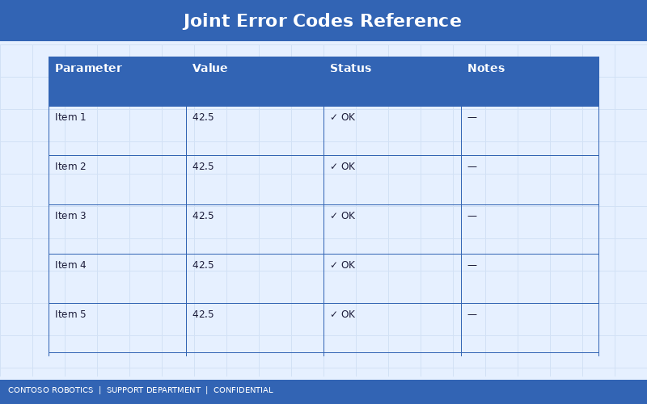
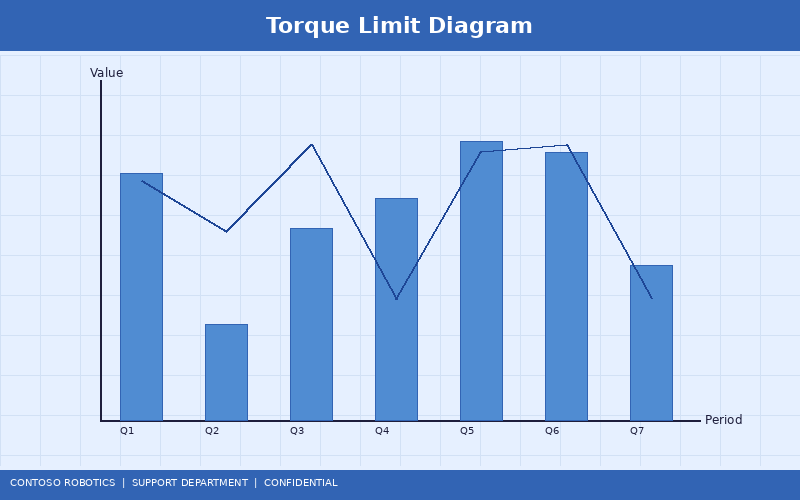

CoBot Pro Joint Error Troubleshooting Guide
This guide helps you diagnose and resolve joint-related errors on the CoBot Pro 500 and CoBot Pro 700. Joint errors are displayed on the teach pendant as error codes in the format E-0XX and are also logged in the CoBot OS v4.2 system journal. For sensor hardware specifications, refer to the Force-Torque Sensor Specification in the Engineering documentation.
1. Understanding Joint Error Codes
Joint errors fall into four categories: communication faults, mechanical faults, thermal faults, and calibration faults. The following table provides a complete reference for codes E-001 through E-015.

| Code |
Category |
Description |
Severity |
| E-001 |
Communication |
EtherCAT frame loss on joint N servo drive |
Warning |
| E-002 |
Communication |
EtherCAT CRC error exceeding threshold (>10/s) |
Warning |
| E-003 |
Communication |
Joint N servo drive not responding (timeout >5 ms) |
Critical |
| E-004 |
Mechanical |
Joint N torque exceeds 110% of rated maximum |
Critical |
| E-005 |
Mechanical |
Joint N following error exceeds 0.5° during motion |
Warning |
| E-006 |
Mechanical |
Joint N brake engagement failure detected |
Critical |
| E-007 |
Mechanical |
Joint N harmonic drive backlash exceeds 0.02° |
Warning |
| E-008 |
Thermal |
Joint N motor temperature exceeds 85°C |
Warning |
| E-009 |
Thermal |
Joint N motor temperature exceeds 95°C (shutdown imminent) |
Critical |
| E-010 |
Thermal |
Joint N servo driver heatsink temperature exceeds 80°C |
Warning |
| E-011 |
Calibration |
Joint N encoder index pulse not detected during homing |
Critical |
| E-012 |
Calibration |
Joint N absolute encoder battery low (<2.8 V) |
Warning |
| E-013 |
Calibration |
Joint N position deviation from expected calibration >0.1° |
Warning |
| E-014 |
Mechanical |
Joint N force-torque sensor signal out of range |
Critical |
| E-015 |
Communication |
Safety Controller SC-100 reports joint N STO latch |
Critical |
2. Torque Limit Issues (E-004, E-005)
Torque-related errors are the most common joint faults and typically indicate a collision, excessive payload, or mechanical binding.

Diagnostic Steps
- Check payload configuration: Navigate to Settings → Payload and verify the mass (kg) and center of gravity (X, Y, Z) match the actual tool and workpiece. An incorrect payload causes the gravity compensation model to over- or under-command torque.
- Inspect for mechanical obstructions: Manually move each joint through its full range (with the robot in freedrive mode) and feel for binding, grinding, or unusual resistance.
- Review the torque log: Navigate to Diagnostics → Joint Torque History. Look for sudden spikes that coincide with the error timestamp. Gradual increases suggest mechanical wear.
- Check the harmonic drive: Error E-007 (backlash) often precedes E-004 (over-torque) if a gear is wearing. Schedule a preventive maintenance inspection if backlash exceeds 0.015°.
- Reduce acceleration: If the error occurs during high-speed motions, reduce the joint acceleration limit in Settings → Motion → Acceleration Limits by 20% and retest.
3. Encoder and Calibration Faults (E-011, E-012, E-013)
Encoder faults prevent the robot from knowing its exact joint positions, which is a safety-critical condition.
E-011: Index Pulse Not Detected
- Verify the encoder cable is securely connected at both the joint and the servo drive.
- Check for cable damage—flex cables near the joint pivot points are susceptible to fatigue.
- Run the encoder diagnostic: Diagnostics → Encoder → Signal Quality. The A/B channel amplitude should be 200–800 mV. Below 150 mV indicates a failing encoder.
- If the encoder is faulty, replace it (part number varies by joint—see the spare parts catalog).
E-012: Encoder Battery Low
- The absolute encoder in each joint uses a CR2032 lithium battery to maintain position through power cycles.
- When battery voltage drops below 2.8 V, the encoder may lose its absolute reference after the next power-off.
- Replace the battery within 30 days of the warning. The battery compartment is accessible via the small panel on the side of each joint module.
- After replacement, run Settings → Calibration → Joint Calibration to re-establish the index reference.
E-013: Calibration Drift
- A position deviation >0.1° from the stored calibration indicates the encoder reference has shifted.
- This commonly occurs after a collision that displaces the encoder disk or after battery replacement.
- Recalibrate the affected joint using the calibration wizard on the teach pendant.
- If the error recurs frequently, inspect the encoder mounting screws for looseness (torque spec: 1.2 Nm).
4. Thermal Faults (E-008, E-009, E-010)
- Check ambient temperature. The CoBot Pro is rated for 5–45°C. Operating above 40°C significantly reduces the thermal margin.
- Verify the duty cycle. Continuous operation at >80% rated torque will cause thermal buildup. Introduce dwell times in the program.
- Inspect the cooling fan on the control cabinet. A blocked or failed fan (listen for bearing noise) causes E-010.
- If E-009 triggers, the robot will enter a 15-minute cool-down period before it can be restarted. Do not bypass this—motor demagnetization can occur above 100°C.
5. Communication Faults (E-001, E-002, E-003)
- Check the EtherCAT cable connections at both ends. Re-seat the RJ45 connectors.
- Verify cable quality: use CAT6a shielded cables only. Unshielded or CAT5e cables are not supported.
- Check for EMI sources near the cable path (VFDs, welding equipment, high-power motors). Reroute if necessary.
- Run the EtherCAT diagnostics: Diagnostics → EtherCAT → Link Statistics. Frame loss rate should be <0.001% and CRC error rate <1/hour.
- If E-003 persists, the servo drive may require replacement. Contact Contoso Robotics Support.
6. When to Contact Support
Contact Contoso Robotics Technical Support if:
- Any Critical-severity error recurs after following the resolution steps above
- Multiple joints report errors simultaneously (may indicate a control cabinet power supply issue)
- The error code is not listed in this guide (custom error codes from third-party integrations)
- Physical damage to the robot is visible (dents, exposed wiring, fluid leaks)
For firmware fixes that address known joint error bugs, see the Firmware Update Procedure in the Support documentation. For force-torque sensor calibration and replacement procedures, refer to the Force-Torque Sensor Specification in the Engineering documentation.
Document version 4.2.0 | Last updated: 2025-01-15 | Contoso Robotics Technical Support